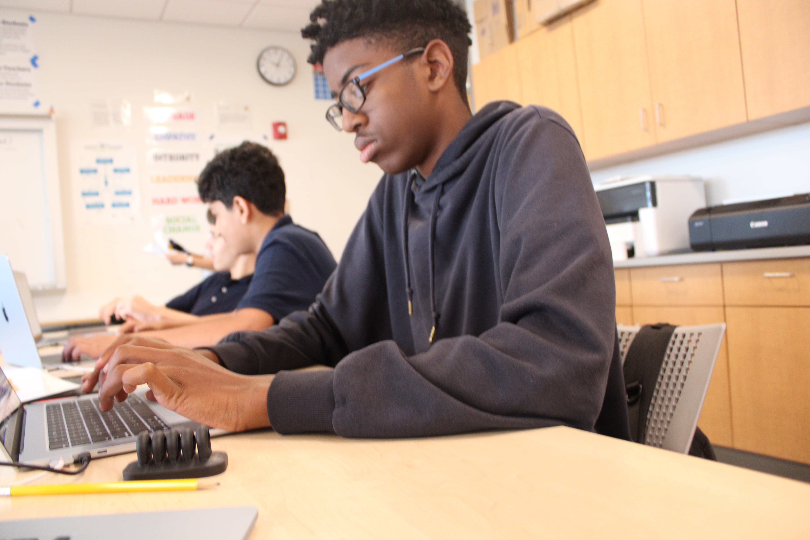

The races that people think that differentiate them are real to an extent. Back in 2024-2025 the class that did it had only a 8.7% that had the same Percentage of Same Race/Ethnicity Comparisons with a Match. Then this year they were only 7.6% Percentage of Same Race/ Ethnicity Comparisons with a Match. Meaning that the differences are not withheld between races. Race is a genetic trait between each community. Like take mice for example if the parent mice have white fur then the offspring will have a good chance to also have white fur but if they were jeans of black fur into DNA then even if both parents had white fur then the offspring could have black fur. However for humans the same could be said about eyes, hair, skin tone, face features or other things. So in the experiment if a person’s gene is close enough to another person's gene then that could be a reason why, for when you swap their cheek they would have a match. From a Biologicals perspectiveTo an extent race is real but that's only because the jeans from person to person are similar enough to have a match and that could be in many people would at least expect to be like a match by eye color or how long did DNA strands are. This would show in all of the years of doing this experiment because one of the lowest percentages was getting a match with someone of your same race.
From the perspective of a social and psychological standpoint, race is real. The race in a social & psychological perspective is acknowledged even in the eyes of the government “Office of Management and Budget (OMB) published the results of its review of Statistical Policy Directive No. 15 (SPD 15) and issued updated standards for maintaining, collecting and presenting race/ethnicity data across federal agencies”. Race is the thing that would separate people from other people like Asians and Egyptians. I know in a social/ physiological sense it is real because most people would want to be with other people that are of the same race and all of the governments classify people with different races.If race wasn't real then people would only identify people that come from different places like American or Indian.
Neighborhoods become segregated because of preferences and how people think when they search for a home. Communities tend to stay separate because of History and a tendency to have some familiarity with people like them. But to add to that it might just also be racism with some people and their history. “ the federal government began a program explicitly designed to increase — and segregate — America's housing stock. Author Richard Rothstein says the housing programs begun under the New Deal were tantamount to a ‘state-sponsored system of segregation.’” it could be because people like to be with other people that they are similar to because then there would be a small sense of safety. But having one third of people of the different race living near to themself might also bring some comfort so they don’t get labeled with the whole community that they’re currently living in. People may stay separated in communities because the sense of familiarity would be best if it wasn't with the sense of racism or bias when they pick a community to choose. So having a sense of safety with people that you may have a bias to rather than people that you don't have advice to would be the reason why people stay separate.